The first-time experience: before, what we changed, and what it should do
We tested how a brand-new user experiences Aurelia, fixed what stopped them, simplified the app, and put it live. This page shows the state before, what we suggested, what is in production now, and the expected effect.
Live in production: design v4, commit c58a67aBased on: retention simulation (25 Oct) and simplification plan (25 Oct)Prepared by: Claude, for Werner and Eugene
Taps from typing a problem to hearing a session145Measured same test user, same request
Test users who landed in someone else's conversation5 of 60 of 6Measured on the real app
First sessions built for the user's own goal0 of 65 of 5Measured the 6th now hears a preview instead
New users still active after 7 days3.8%8.3%Predicted model, not yet measured
In one paragraph. Before, a new user could reach a session quickly, but in most cases it was not about what they asked for. They saw invented progress before they had listened, and nothing invited them back. We fixed those moments, added a simple reason to return (a check-in after each session and a reminder for the next chapter), and reorganised the app into four tabs. All of it is live. The test users now get a session built for their goal in about a third of the taps. Our model predicts that roughly twice as many new users will still be active after a week. That forecast is not a measurement yet: it needs a short test with real users.
1. How we looked at it
We set up six realistic first-time users with different needs: trouble sleeping, work stress, anxiety with only five minutes to spare, exam focus, an experienced meditator, and someone recovering from burnout. Each one used the real app from a fresh browser, entering a different way (typing on Home, tapping a feeling, pressing Play, signing in first, skipping the setup). We recorded every tap and screen.
We then asked the questions a real user test would ask at each step: was it easy, did it understand me, do I trust what it shows, would I come back tomorrow. A simple model turns those answers into a forecast of how many people return after 1, 7 and 30 days, checked against typical numbers for health and wellness apps.
Two kinds of numbers appear in this report. Measured means it happened on the real app. Predicted means it comes from the model and still has to be confirmed with real people.
2. Before, the suggestion, and what is live now
Seven moments that decide whether a new user stays. Each shows the old screen and today's production screen.
Their own words are used
BeforeSomeone typed "I can't fall asleep, my mind keeps racing", signed in, and was asked their goal and feelings again. Their sentence was then dropped.
SuggestionRead the goal from what they wrote and go straight to a short summary with one button.
Now"Got it, Adam. Read from what you wrote." The summary is filled in and their words go into the first message. Live
Before
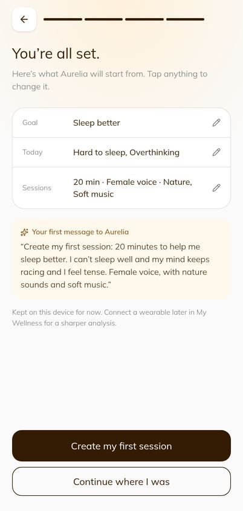
Now
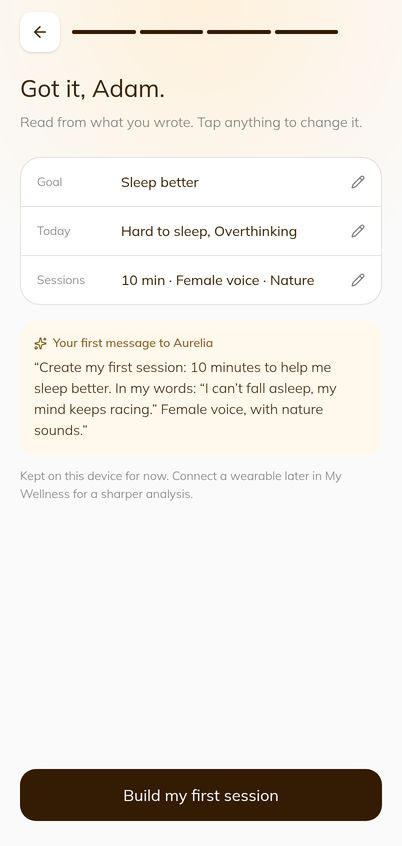
A conversation of their own
Before5 of 6 test users landed in a sample conversation about someone else's sleep score, including a message "they" had supposedly written.
SuggestionEvery first visit starts an empty conversation that belongs to the user.
NowEvery entry point opens their own conversation, whichever way they came in. Live
Before
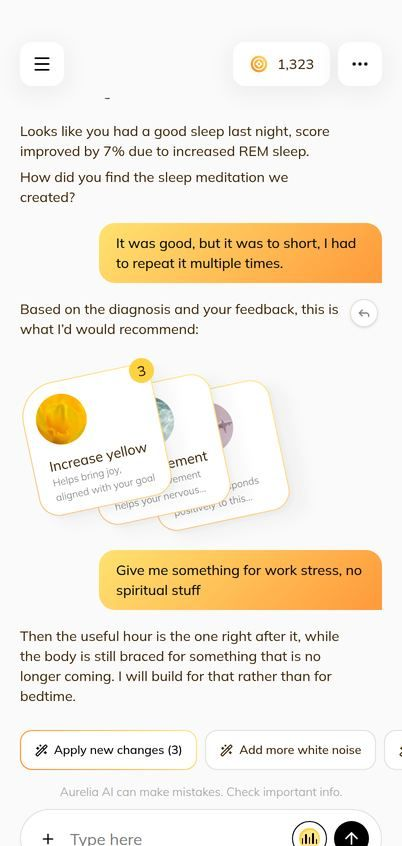
Now
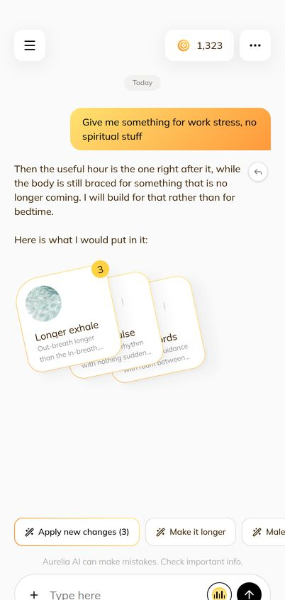
A first session for their goal, with no early paywall
BeforeEveryone got the same "Sleep meditation v1.3" with yellow colours and 432 Hz, even after asking for "no spiritual stuff". Three of six were told their edits were paused after one message.
SuggestionPropose changes that match the goal and the choices just made. Count the free limit only after the first session.
NowThe session is named after the goal ("Feel calmer v1.0") with matching changes, and the first build happens automatically. No limit before it. Live
Before
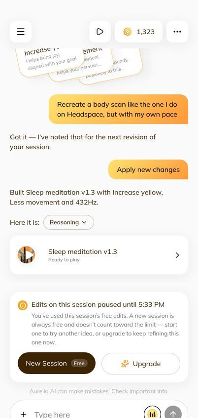
Now
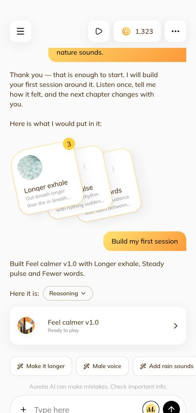
Honest results, and a reason to come back
BeforeBefore pressing play, the player said "Great Progress! +3% since yesterday" and drew three chapters of improvement. None of it was real.
SuggestionAsk "How do you feel now?" (one tap), then promise the next chapter and offer a reminder.
NowOne-tap check-in, then "Chapter 2 is ready tomorrow night" with a calendar reminder at a time that fits the goal (22:30 for sleep). Live
Before
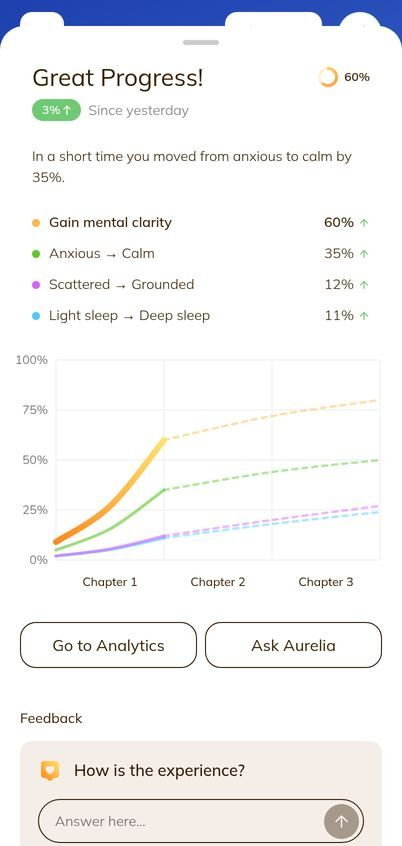
Now
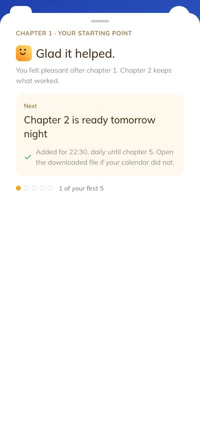
Home waits for them
BeforeAfter the first session, Home was the same sign-up page a stranger sees. Nothing said what to do next.
SuggestionLead with the next chapter, say why it changed, and remove the sales pitch for signed-in users.
Now"Tonight · Sleep better, Chapter 2" with one Play button and a five-chapter track. Live
Before
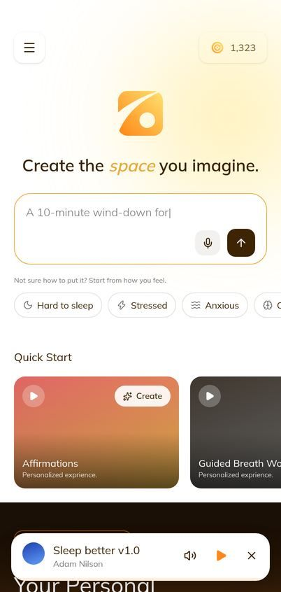
Now
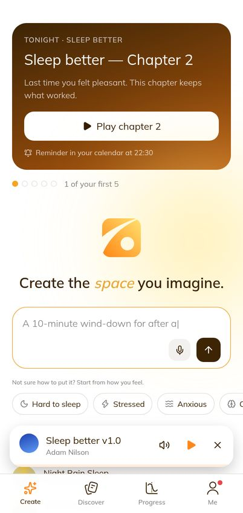
Four tabs instead of a hidden menu
BeforeThe main navigation was behind a menu button, with nine items. The coin balance was in about ten headers.
SuggestionFour tabs for the four core features (Create, Discover, Progress, Me), and everything about the account in Me.
NowFour tabs always visible. Me holds Library, Credits & plan, notifications, invite, settings and help. Live
Before
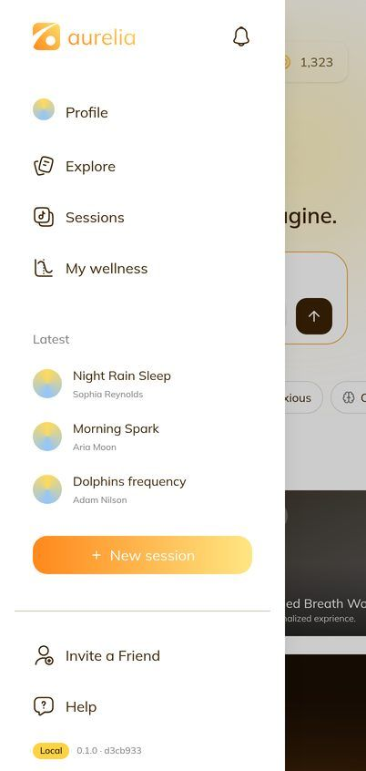
Now
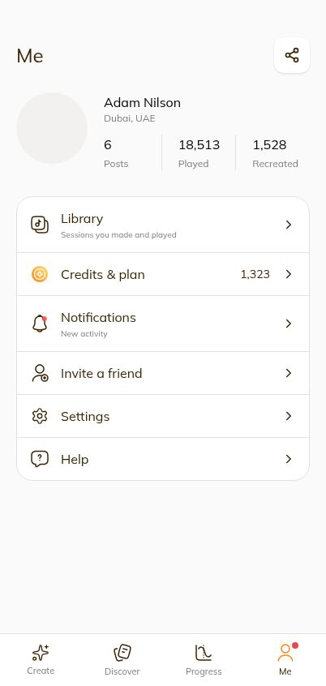
One list of changes in the chat
BeforeThree ways to change a session, from two lists with two different scores for the same change (12% and 3%).
SuggestionOne list, with Aurelia's suggestions already picked at the top, and one score each.
NowTapping the suggestions opens a single "Change this session" list. Live
Before
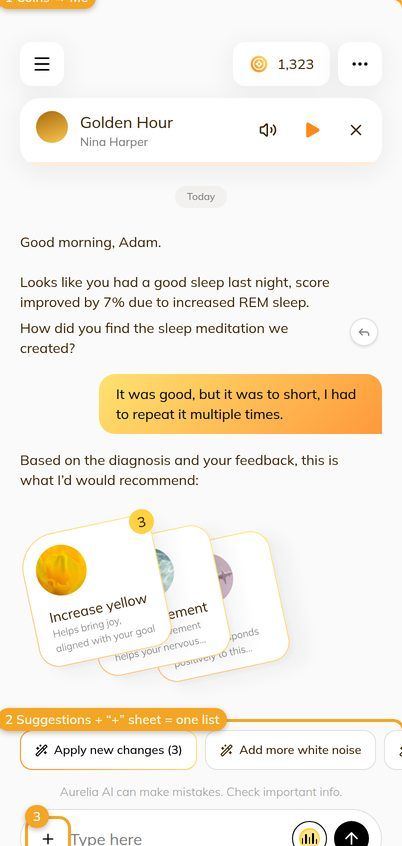
Now
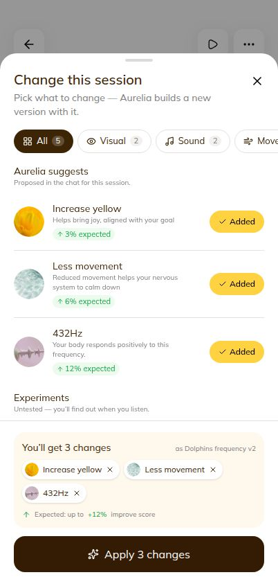
3. Impact
What we measured on the real app Measured
Test user
Need
Before
Now
Maya
Can't sleep
14 taps; her words lost; invented progress
5 taps; "Sleep better" built from her words; check-in and reminder
Sari
Anxious, 5 minutes
13 taps; off-topic reply; paywall on message one
6 taps; "Feel calmer" session; no paywall
Tom
Burnout, from his therapist
15 taps; answered as if he asked about focus
6 taps; "Regulate my body" session
Raka
Work stress, skeptical
Sample conversation; watch and calendar "connected" without asking
His own conversation; nothing connected until he chooses
Dewi
Experienced meditator
Asked for a body scan, got "Sleep meditation v1.3"
Gets a body-scan session for her goal
Leo
Exam focus
Pressed Play, got a sign-in wall; never heard a sound
Pressing Play plays straight away
What we expect for retention Predicted
Share of all new users who come back and listen or create on day 1, 7 and 30. The shaded band is the usual range for health and wellness apps.
Before the workProduction nowWith the remaining items done
How to read this. Before the work, Aurelia sat below the usual range for wellness apps on every day. Production now should sit at the lower edge of that range, about twice the old return rate. Finishing the remaining items (next section) should bring it into the middle of the range.
These are forecasts from a model built on simulated users, not real people. Use them to choose what to do next, not as numbers to promise. The ranges around them are wide.
4. What is not done yet
Item
Why it matters
Status
Progress tab shows the user's own results
It still shows sample results ("Great Progress 60%") that are not the user's. This is the last place the app shows invented progress.
Proposed (S1)
Staying signed in after closing the page
Today every visit starts signed out. Without this, we cannot measure real retention.
Decision needed
A short test with 8–12 real users
Turns the forecast above into real numbers. Pass line we suggest: day 1 at least 25%, day 7 at least 10%, day 30 at least 5%.
Not started
Push reminders and real AI replies
The reminder is a calendar file for now, and replies after the first message are still demo text. Both need the backend.
Needs backend
Further simplification (S2–S7)
Fewer buttons on Create and Discover, one Credits & plan page, one Recreate button. Sent to users for feedback.
Waiting on feedback
Design polish in Figma, and the mobile app
The new screens follow our drafts and existing styles. A designer's pass and the Flutter app should follow.
Not started
5. Decisions we need from you
1. Keep users signed in?Needed before any real retention number can be trusted. We recommend yes, for the test at least.
2. Run the 8–12 person test?About two weeks including the day-7 follow-up. It confirms or corrects every forecast in this report.
3. Show users their own progress (S1)?A small change that removes the last invented numbers. We recommend doing it next.
Sources in the repository: retention simulation (docs/reviews/Aurelia-Retention-Simulation-2026-10-25.pdf), simplification plan (docs/reviews/Aurelia-Simplification-Plan-2026-10-25.pdf), update log entries U050–U052, work journal J039–J046.